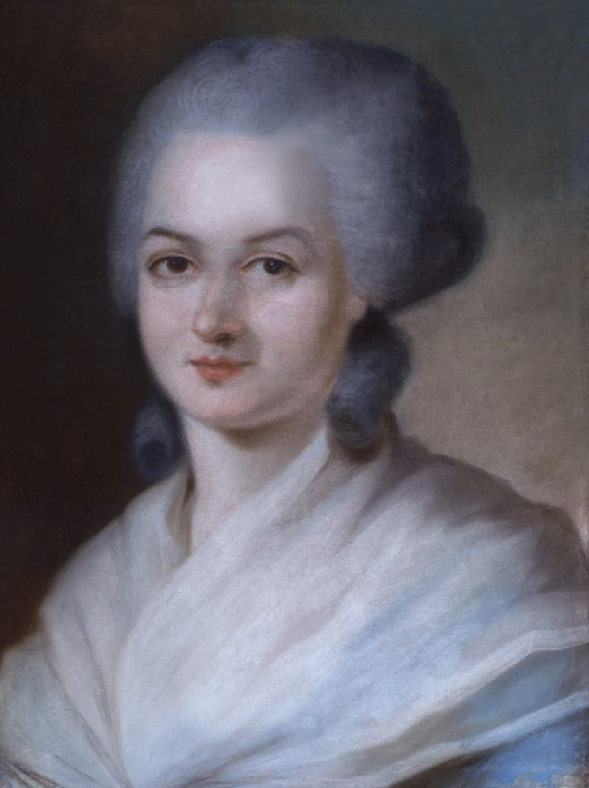
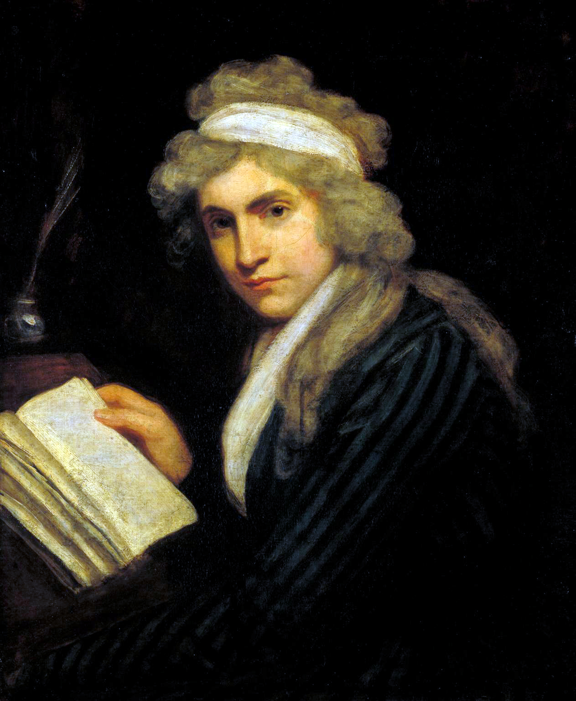

Tema 11 · La Ilustración
Para entrar en la Ilustración
En el tema anterior seguimos a la modernidad buscando en los propios seres humanos —y ya no en Dios— el fundamento del poder político, hasta desembocar en el liberalismo y en la nueva sociedad capitalista (§46). Aquel atrevimiento no fue un episodio aislado de la teoría del Estado: era la punta de lanza de un movimiento mucho más amplio que, durante los siglos XVII y XVIII, se propuso someterlo todo —la naturaleza, la sociedad, la religión, la moral— al tribunal de la razón. Ese movimiento es la Ilustración, el «Siglo de las Luces», y este tema lo recorre por dentro.
Un movimiento que se atreve a pensar. La Ilustración es un movimiento cultural, filosófico y político europeo que comparte tres grandes objetivos: combatir la superstición, el dogma y el peso muerto de la tradición; buscar explicaciones racionales del mundo y de la sociedad; y divulgar el saber para emancipar a quien hasta entonces vivía en la ignorancia —de ahí empresas como la Enciclopedia francesa de Diderot y d’Alembert—. Sus raíces están en el humanismo y en la nueva ciencia del Renacimiento (§30, §33), que ya habían puesto al ser humano en el centro de la reflexión; su impulso político viene de la Inglaterra parlamentaria, pasa por la Holanda que dio refugio a los pensadores perseguidos —el propio Descartes entre ellos— y prende en la Francia que desembocará en la Revolución de 1789. Su epígono, el pensador que mejor condensó su espíritu, fue Immanuel Kant.
El mapa del tema. Empezaremos por el corazón del proyecto ilustrado, leído a través del breve y célebre texto en que Kant se preguntó qué era la Ilustración: la confianza en la razón, la salida de la «minoría de edad» y, también, los límites de esa razón (§47). Veremos luego su gran fruto político, la proclamación de los Derechos del Hombre, y la distancia entre su universalismo y su alcance real (§48). Y cerraremos con quienes tomaron en serio ese universalismo hasta sus últimas consecuencias y denunciaron que dejaba fuera a media humanidad: las primeras voces del feminismo ilustrado, Olympe de Gouges y Mary Wollstonecraft (§49).
§47 · El proyecto ilustrado: potencia y límites de la razón
Una época que se pregunta por sí misma. Pocas épocas se han puesto a sí mismas un nombre y han discutido qué significaba. La Ilustración fue una de ellas. En 1784, una revista de Berlín lanzó a sus lectores una pregunta —¿qué es la Ilustración?— y, entre las respuestas, hubo una breve, casi de circunstancias, que acabaría convertida en el manifiesto de toda una época: la de Immanuel Kant (1724-1804)1. Conviene leerla despacio, porque en ella late lo mejor —y lo más discutible— del proyecto ilustrado.
«Sapere aude»: salir de la minoría de edad. Kant arranca con una definición que se ha hecho célebre: «La Ilustración es la salida del hombre de su autoculpable minoría de edad». Hay que entender bien los términos. La minoría de edad no es aquí una cuestión de años, sino «la incapacidad de servirse del propio entendimiento sin la guía de otro»: la de quien necesita que alguien piense por él. Y es autoculpable porque su causa no está en la falta de inteligencia, sino en la falta de decisión y de valor para usar la que se tiene. De ahí el lema que Kant toma del poeta latino Horacio y convierte en divisa de la época: «Sapere aude!», «¡atrévete a saber!», ¡ten el valor de servirte de tu propio entendimiento! Lo que nos mantiene menores de edad, dice, no es la dificultad del mundo, sino nuestra propia pereza y cobardía.
Los tutores. ¿Por qué cuesta tanto pensar por uno mismo? Porque es cómodo no hacerlo. Si tengo un libro que piensa por mí, un director espiritual que me hace de conciencia y un médico que me dicta la dieta, no necesito esforzarme: otros cargan con esa tarea fastidiosa. Kant llama tutores a quienes se erigen en guías y nos persuaden de que pensar por cuenta propia es difícil y hasta peligroso. Lo compara con el ganado al que se mantiene en las andaderas y se asusta con los riesgos de caminar solo, cuando lo cierto es que aprendería a hacerlo tras unas pocas caídas. La sociedad entera vive así en una infancia prolongada, no porque le falten luces, sino porque se ha acostumbrado a la tutela. La meta de la Ilustración es que alcance la mayoría de edad.
Autonomía frente a heteronomía. Esa mayoría de edad tiene un nombre filosófico: autonomía —de autós, uno mismo, y nómos, ley o norma—, darse uno la propia regla y pensar y decidir por sí mismo. Su contrario es la heteronomía —de héteros, otro—, regirse por la norma que otro impone. Es uno de los conceptos más fecundos que nos deja Kant, y reaparecerá con toda su fuerza en su ética, donde la autonomía de la voluntad será la clave misma de la dignidad moral (§51).
La libertad y el doble uso de la razón. Para que cada cual se atreva a pensar hace falta una condición que no depende solo del individuo: la libertad. Pero Kant la entiende de un modo preciso y, a primera vista, desconcertante2. Distingue dos usos de la razón. El uso público es el que uno hace «como docto», esto es, dirigiéndose por escrito al gran público de los lectores; ese uso debe ser siempre libre, porque solo él hace avanzar a la humanidad. El uso privado es el que uno hace desde un cargo o una función determinados, y ese sí puede —y a veces debe— limitarse para que la maquinaria social funcione.
Razonad, pero obedeced. Los ejemplos de Kant lo aclaran. El oficial debe obedecer la orden de sus superiores en el cuartel —ahí no le toca discutir—, pero, como hombre culto, puede publicar por escrito una crítica de los defectos del servicio militar. El contribuyente debe pagar el impuesto que le corresponde, pero puede denunciar públicamente su injusticia. El sacerdote debe enseñar a su comunidad según el credo de su iglesia, pero, como docto, puede exponer ante el mundo sus reparos a ese mismo credo. La idea se resume en la divisa que Kant atribuye a Federico II de Prusia: «¡Razonad todo lo que queráis y sobre lo que queráis, pero obedeced!». Y la divisa obliga en las dos direcciones: al monarca que pretende dictaminar con su sola autoridad en materia de doctrina, Kant le recuerda el viejo reproche Caesar non est supra grammaticos —«el César no está por encima de los gramáticos»—, porque tampoco el poder supremo manda sobre lo que solo la razón pública puede juzgar. Lo que la Ilustración reclama, por tanto, no es la desobediencia ni el desorden, sino algo más concreto y más poderoso: la libertad de discusión pública, sin la cual ninguna sociedad puede corregirse ni progresar.
Una época de Ilustración, no una época ilustrada. Kant es lúcido sobre su propio tiempo. ¿Vivimos —se pregunta— en una época ilustrada? Su respuesta es no. ¿En una época de Ilustración? Sí: las condiciones para la emancipación ya están en marcha, los obstáculos disminuyen, el espacio para pensar libremente se ha abierto. La Ilustración no es un estado alcanzado, sino una tarea en curso —un matiz que conviene retener, porque vacuna contra la idea ingenua de que basta proclamar la razón para que el mundo se vuelva razonable—.
Progreso y dignidad. De ahí su optimismo de fondo: la confianza en que la razón, usada con libertad, puede construir una sociedad mejor y devolver al ser humano su dignidad. Kant cierra su texto con una imagen esperanzada: el espíritu del libre pensar acaba calando en el sentir del pueblo y, con el tiempo, hasta en los principios de gobierno, que aprenden a tratar al ser humano —«que es algo más que una máquina»— conforme a su dignidad. La misma esperanza late en el lema con que la Revolución Francesa de 1789 resumiría sus aspiraciones: «libertad, igualdad, fraternidad».
Potencia y límites de la razón. Hasta aquí la potencia de la razón: su capacidad de liberar, criticar y hacer progresar. Pero el título de esta sección habla también de límites, y conviene distinguir dos. El primero es interno: el mismo Kant que ensalza la razón será quien marque sus fronteras, porque una razón verdaderamente madura tiene que examinarse a sí misma y reconocer hasta dónde alcanza su conocimiento. Ese es el corazón de su filosofía crítica, y lo veremos en el próximo tema (§50); la razón ilustrada, bien entendida, no es ingenua, sino autocrítica. El segundo límite es histórico: el optimismo ilustrado encontró pronto resistencia. El Romanticismo opuso al universalismo de la razón el valor del sentimiento, la historia y lo particular de cada pueblo; y, ya en el siglo XX, Horkheimer y Adorno denunciarían en su Dialéctica de la Ilustración que una razón reducida a puro cálculo —razón instrumental— podía volverse contra la emancipación que prometía y recaer en nuevas formas de dominio (§68). Tener presentes esos límites no rebaja el proyecto ilustrado: lo vuelve más honesto.
Porque, con todos sus claroscuros, la Ilustración no se quedó en la conciencia de cada individuo. Su confianza en una razón común a todos cristalizó en un fruto político de enorme alcance: la proclamación de que los seres humanos nacen libres e iguales en derechos (§48).
§48 · Los Derechos del Hombre
De la autonomía individual a los derechos de todos. Si cada ser humano es capaz de pensar por sí mismo y debe poder hacerlo (§47), entonces ninguno vale por nacimiento más que otro: todos comparten una misma razón y, con ella, una misma dignidad. De esa intuición tan ilustrada nace la idea moderna de los derechos humanos: derechos que no concede el rey ni la costumbre, sino que se tienen por el mero hecho de ser persona. Y esa idea no se quedó en los libros de filosofía: se escribió en documentos solemnes que aún hoy nos rigen.
Una herencia filosófica: los derechos naturales. El cimiento teórico lo habíamos visto ya en John Locke (§44). Frente a quienes hacían descender el poder de Dios, Locke sostuvo que los seres humanos poseemos por naturaleza ciertos derechos naturales —la vida, la libertad, la propiedad—, anteriores a toda sociedad e inalienables: nadie puede arrebatárnoslos ni nosotros cederlos del todo. Las declaraciones de derechos son, en buena medida, esa filosofía convertida en ley: traducen la teoría del contrato y de los derechos naturales al lenguaje jurídico de un Estado.
Tres declaraciones. El proceso fue acumulativo. En Inglaterra, la Declaración de Derechos (Bill of Rights) de 1689 puso límites al poder del rey en favor del parlamento, tras la revolución que sirvió de telón de fondo a Locke (§44). En América, la Declaración de Derechos de Virginia y la Declaración de Independencia, ambas de 1776, proclamaron que «todos los hombres son creados iguales» y dotados de derechos inalienables. Y en Francia, la Declaración de los Derechos del Hombre y del Ciudadano de 1789 se convirtió en el emblema de la Revolución, con su afirmación rotunda: «los hombres nacen y permanecen libres e iguales en derechos». Las tres comparten un mismo núcleo: la igualdad ante la ley, la libertad, la propiedad, la soberanía que reside en la nación y no en el monarca, y la idea —de raíz plenamente ilustrada— de que el poder existe para garantizar esos derechos, no para pisotearlos.
El universalismo y su letra pequeña. Aquí, sin embargo, hay que leer con cuidado y no idealizar. Las declaraciones hablan del «Hombre» en términos universales, pero ese sujeto universal fue, en la práctica, mucho más estrecho de lo que las palabras prometían. El mismo movimiento que proclamaba la igualdad convivió con exclusiones profundas. Tres, sobre todo:
- Las mujeres. El «Hombre» de las declaraciones era, demasiado a menudo, el varón. Las mujeres quedaron al margen de la ciudadanía política —sin voto, sin acceso a los cargos, sin plena personalidad jurídica—. Es la exclusión que denunciarán las primeras feministas (§49).
- Las personas esclavizadas y los pueblos colonizados. Francia y los nacientes Estados Unidos proclamaban la libertad mientras mantenían la esclavitud y sus imperios coloniales. La contradicción era flagrante, y estallaría pronto: la independencia de Haití (1804), nacida de una rebelión de esclavos que tomaron al pie de la letra la Declaración, la dejó al descubierto.
- Los no propietarios. El derecho al voto se ató durante mucho tiempo a la riqueza —el sufragio censitario—: la Francia revolucionaria llegó a distinguir entre ciudadanos «activos», que votaban, y «pasivos», que no. Quien nada poseía, poco contaba. Es la otra cara del liberalismo que vimos nacer de la mano de Locke y de la nueva economía (§46).
Un principio más grande que su época. Que las declaraciones no cumplieran lo que prometían no las invalida; al contrario. Al proclamar un principio universal —todos los seres humanos son libres e iguales—, pusieron en manos de los excluidos el arma más eficaz para reclamar su sitio: bastaba con exigir que la regla se aplicara de verdad a todos, sin excepción. Y eso es justamente lo que hicieron, ya en 1791, las primeras pensadoras que se atrevieron a reescribir la Declaración en femenino. A ellas dedicamos la última sección (§49).
§49 · El feminismo ilustrado: Olympe de Gouges y Mary Wollstonecraft
Tomarle la palabra a la Ilustración. La Ilustración había proclamado que todos los seres humanos son iguales en razón y en derechos (§47, §48). Bastaba aplicar ese principio con coherencia para que saltara una contradicción incómoda: ¿por qué quedaban fuera las mujeres? Las primeras en señalarlo con fuerza fueron dos contemporáneas de la Revolución Francesa, una en Francia y otra en Inglaterra. A su pensamiento lo llamamos feminismo ilustrado3: feminismo porque reivindica la igualdad de las mujeres; ilustrado porque lo hace con las armas de la propia Ilustración. No eran las primeras en defender a las mujeres —ya Platón había admitido mujeres entre los guardianes de su ciudad ideal (§11)—, pero sí las primeras en convertir esa defensa en un programa razonado y público.
Olympe de Gouges (1748-1793). Autodidacta, dramaturga y activista, Olympe de Gouges llevó el principio revolucionario hasta su conclusión lógica. En 1791 escribió la Declaración de los derechos de la mujer y de la ciudadana, calcada de la Declaración de 1789 (§48) pero reescrita en femenino, precisamente para hacer visible lo que aquella callaba: que las mujeres no estaban incluidas en su «Hombre». Su artículo primero no deja lugar a dudas: «La mujer nace libre y permanece igual al hombre en derechos». Reclamó la igualdad jurídica plena —el voto, el acceso a los cargos, la propiedad, el divorcio— y fue, además, abolicionista, contraria a la esclavitud. Una de sus frases se volvió tristemente profética: si la mujer «tiene derecho a subir al cadalso, debe tener igualmente el de subir a la tribuna». Murió en la guillotina en 1793, durante el Terror, condenada en buena parte por sus ideas.

Mary Wollstonecraft (1759-1797). Un año después, en Inglaterra, la escritora y filósofa Mary Wollstonecraft publicó la Vindicación de los derechos de la mujer (1792), considerada el primer gran clásico del pensamiento feminista. La escribió como respuesta a un político francés, Talleyrand, que había defendido que a las mujeres les bastaba con una educación doméstica4. Frente a esa idea, Wollstonecraft construyó un alegato que sigue siendo, dos siglos después, sorprendentemente actual.

La razón no tiene sexo. Su tesis es de raíz plenamente ilustrada: las mujeres son tan capaces de razón como los varones —la verdad, al fin y al cabo, es una para todos— y, por eso mismo, deben ser educadas racionalmente, no adiestradas para agradar. Si la sociedad enseña a las niñas desde la infancia que su única arma es la belleza y las mantiene en la frivolidad, no es porque sean incapaces, sino porque se les niega la educación que las haría libres. Wollstonecraft defendió la coeducación —niñas y niños formándose juntos— y sostuvo que la mujer puede ser compañera, y no solo esposa, del varón, y emprender una profesión si así lo desea. La buena educación, escribió, es la que fortalece el entendimiento «para que el individuo adquiera hábitos de virtud que lo hagan independiente»; y «individuo», subrayaba, incluye a las mujeres tanto como a los varones.
Una crítica que apuntaba alto. Lo notable es que su denuncia no se dirigía contra los enemigos de la Ilustración, sino contra la propia Ilustración cuando se contradecía. Su blanco principal fue nada menos que Rousseau (§45), que había sostenido que a la mujer debía educársela para el placer y el servicio del varón. Que semejante idea viniera de uno de los grandes campeones de la libertad y la democracia fue, para Wollstonecraft, lo más indignante: demostraba que el universalismo ilustrado se detenía, sin razón alguna, en las puertas de la mitad de la humanidad.
Límites y contradicciones. Con todo, su pensamiento tiene fronteras que conviene reconocer.
- Roles diferenciados. Pese a su audacia, Wollstonecraft no llegó a cuestionar del todo que mujeres y varones tuvieran caracteres y papeles sociales distintos; defendía, más bien, que cada sexo cultivara con dignidad su propio ámbito.
- Una mirada de clase. Pertenecía a la burguesía y la tomaba como medida de lo «natural». Miraba con recelo tanto a los ricos —ociosos y artificiosos, a su juicio— como a los pobres, y aceptaba sin escándalo una escuela que a los nueve años separaba ya a los niños según su fortuna.
Señalar estos límites no rebaja su mérito —pensaba contra la corriente de su tiempo y murió joven, a los treinta y ocho años, sin poder corregir ni ampliar su obra5—; los pone, simplemente, en su contexto.
Las dos voces se reparten el terreno con nitidez, como resume la tabla siguiente: Gouges ataca por el flanco político-jurídico; Wollstonecraft, por el de la educación y la razón.
| Olympe de Gouges | Mary Wollstonecraft | |
|---|---|---|
| Obra | Declaración de los derechos de la mujer y de la ciudadana (1791) | Vindicación de los derechos de la mujer (1792) |
| Interlocutor | La Declaración francesa de 1789, que excluía a las mujeres (§48) | Talleyrand, que defendía solo una educación doméstica para las mujeres |
| Terreno | Político-jurídico: igualdad de derechos y ciudadanía | Educativo: la capacidad racional y la educación de las mujeres |
| Tesis central | La mujer nace libre e igual al varón en derechos | Las mujeres son capaces de razón y deben educarse como los varones |
| Límite o matiz | Radicalidad igualitaria; murió guillotinada en 1793 | Mantiene roles diferenciados y una mirada de clase burguesa |
La semilla y las olas. Gouges y Wollstonecraft no fundaron un movimiento organizado, pero plantaron una semilla difícil de arrancar. Sus dos grandes reivindicaciones —la igualdad jurídica y el derecho a la educación— alimentarían todo el feminismo posterior: la primera ola sufragista del siglo XIX, que conquistaría el voto; y, más tarde, la reflexión de Simone de Beauvoir y las olas contemporáneas, que se estudian al final del manual (§76-§77). Habían hecho lo más difícil: tomarle la palabra a la Ilustración y exigir que su razón universal lo fuera de verdad, sin excepciones.
Kant tendrá tratamiento propio más adelante, porque su filosofía crítica abre una etapa entera del pensamiento (§50). Aquí nos interesa solo como el pensador que dio voz al programa ilustrado.↩︎
El reparto kantiano invierte el sentido que hoy damos a las palabras: para nosotros «público» suele ser lo oficial o estatal y «privado» lo personal, mientras que en Kant es casi al revés. Conviene fijarse en cómo define él los términos —se explican enseguida— y no dar por supuesto su significado corriente.↩︎
La historiografía —y el propio currículo— lo llaman a veces «primera ola» del feminismo. Aquí reservamos esa etiqueta para el movimiento sufragista del siglo XIX (§76) y hablamos de «feminismo ilustrado» para estas pensadoras anteriores, que aplican a la condición de la mujer las herramientas de la Ilustración: razón, autonomía y derechos. La tabla de correspondencias conserva «primera ola» para la trazabilidad con el decreto.↩︎
Es decir, una educación orientada solo a las tareas del hogar y al cuidado de la familia, sin formación general y mucho menos universitaria.↩︎
Murió pocos días después de dar a luz a su hija, también llamada Mary: Mary Shelley, que años más tarde escribiría una novela pionera de la ciencia ficción que sin duda te suena, Frankenstein (1818).↩︎